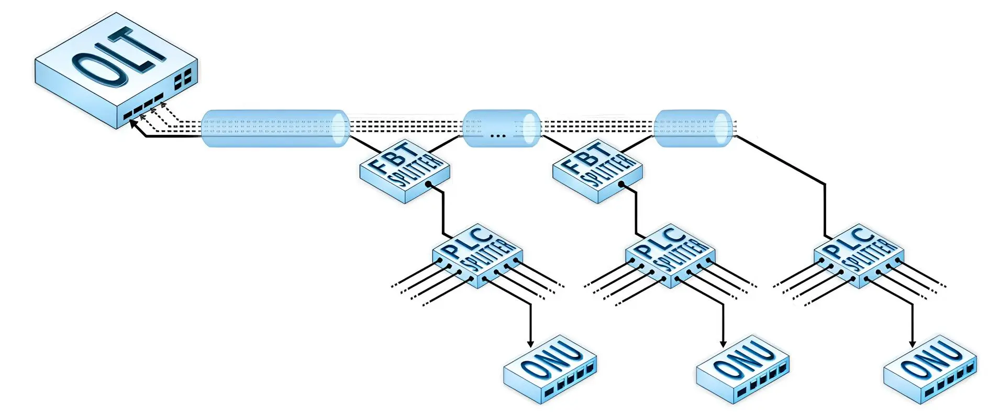
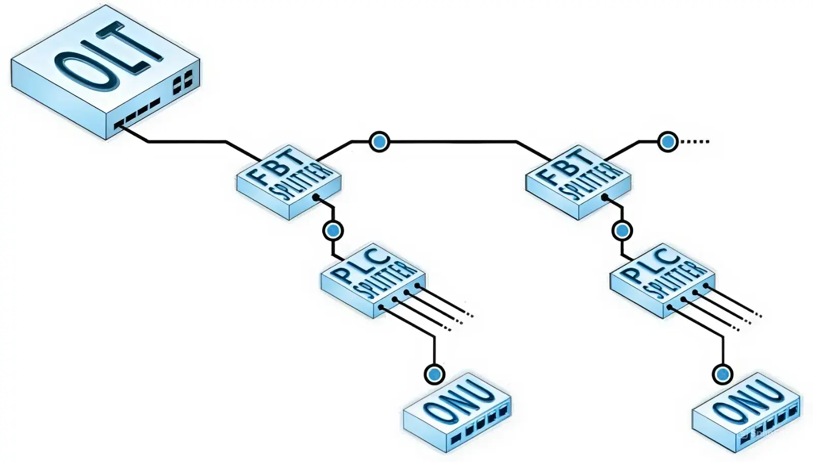
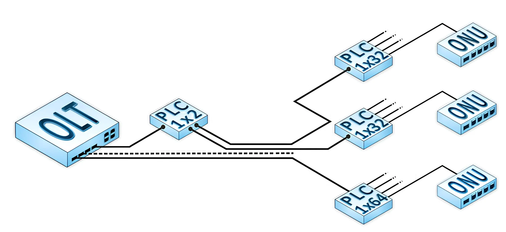
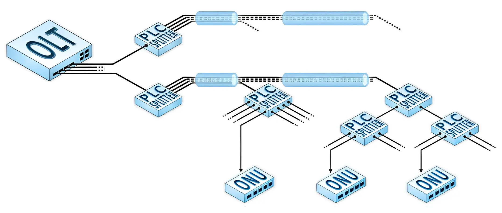
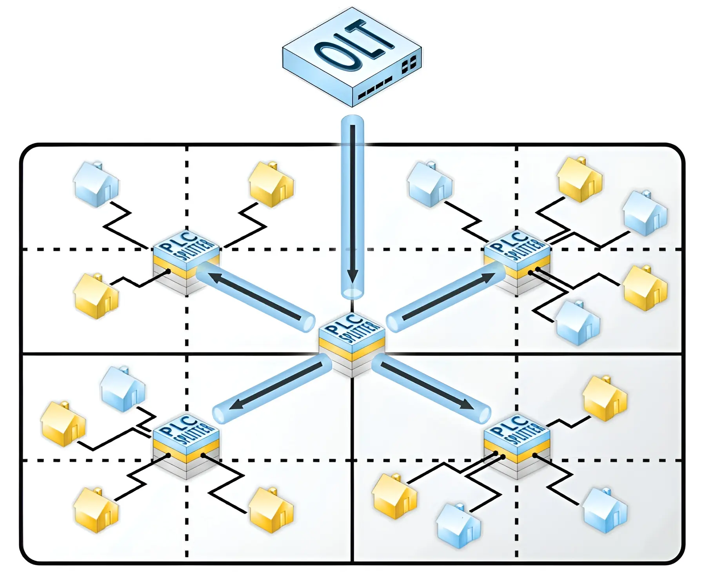
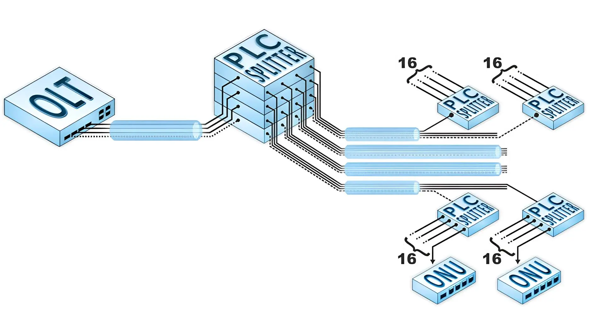
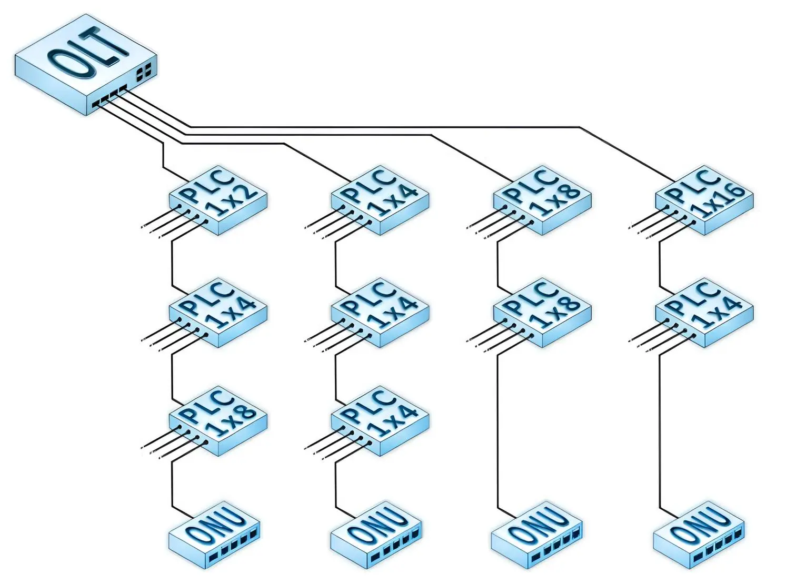

PON Designer — це симулятор фізичної мережі. Ви проектуєте реальні вузли, прокладаєте кабелі та комутуєте оптичні волокна.
1. Муфти (Closures) vs Розподільчі Коробки (FOB)
2. Багатоквартирні будинки (MDU): FTTH чи FTTB?
3. Топології: Шина vs Зірка
Вибір топології визначається географією ділянки, щільністю забудови та кількістю потенційних абонентів. Один PON-порт OLT обслуговує до 64 ONU, а сумарне оптичне затухання від OLT до будь-якої ONU не повинно перевищувати 30 дБ.
Шина (Bus Topology) — послідовний каскад FBT


Включення зварного дільника в магістральну лінію без використання механічних з'єднувачів
Розгортається на одному волокні з використанням каскаду зварних дільників FBT 1×2 за принципом «більша потужність — в лінію»: гілка з більшим рівнем сигналу (Pass / Out2) живить подальший каскад, гілка з меншим рівнем (Tap / Out1) відводиться через планарний дільник PLC до групи абонентів у поточному вузлі.
Найефективніша комбінація: зварні FBT 1×2 з розподілом потужності 5/95%, 10/90%, 20/80%, 30/70%, 40/60%, 50/50% у поєднанні з планарними PLC 1×4 або 1×8 на відводах. З'єднання між виходом FBT та входом PLC виконується механічним конектором SC/UPC для локалізації можливих завад у пасивній мережі.
Зірка (Star Topology) — одноточковий розподіл PLC

Від PON-порту OLT прокладається одне волокно до центрального планарного дільника PLC 1×64, розташованого рівновіддалено від усіх абонентів. Існує два варіанти виконання: з дільником 1×64 або каскадом PLC 1×2 + два PLC 1×32 для покриття витягнутих або овальних ділянок з використанням двоволоконного кабелю.
Бюджет втрат для схеми 1×64: затухання на дільнику з урахуванням механічних з'єднань — 22,5 дБ; залишковий оптичний бюджет — 4,5 дБ, що відповідає максимальній довжині волокна ~12,5 км.
Дерево (Tree Topology) — каскадний розподіл PLC

PON-порт OLT є «коренем» дерева. Відразу за OLT встановлюється дільник (наприклад, PLC 1×8), що підключається до багатоволоконного кабелю — «стовбура» дерева. По мірі необхідності від стовбура відгалужується та розварюється одне волокно, з якого починає розвиватися «гілка» на групу абонентів з дільниками PLC 1×8 або комбінацією 1×2 + 1×4. На базі одного OLT можливо побудувати до 4 незалежних дерев ємністю 64 абоненти кожне.
Мультидерево (Multi-tree Topology) — квадратно-гніздовий метод

Квадратно-гніздовий спосіб проектування топології PON типу «мультидерево» з використанням планарних дільників 1х4

Основний вузол ділення при розвитку топології PON типу «мультидерево»

Основні способи розгалуження пасивного дерева
Класика побудови пасивних деревоподібних мереж. Усі PON-порти OLT «упаковуються» в один спільний багатоволоконний магістральний кабель (кількість волокон кратна 4). Житловий масив розбивається на квадрати (квадратно-гніздовий спосіб), у центрі кожного встановлюється планарний дільник PLC 1×N. Фактично мережа є групою незалежних дерев в одному кабелі, що починається і закінчується в одних і тих же точках.
Розвиток мережі відбувається поетапно: спочатку задіюється перше волокно кабелю (перше дерево), а у всіх вузлах поділу підключаються необхідні дільники. Як тільки абонентський дільник на певному напрямку заповнюється — в тому ж напрямі починає розвиватися наступне дерево.
Мультидерево може будуватися на базі будь-якої комбінації дільників PLC 1×2, 1×4, 1×8, 1×16 або зварних FBT 1×2 con урахуванням правила: жодне волокно з PON-порту OLT не ділиться більше ніж на 64 абоненти, а сумарне затухання не перевищує 30 дБ.
| Тип | Гілка X (%) | Затух. X (дБ) | Гілка Y (%) | Затух. Y (дБ) | Застосування |
|---|---|---|---|---|---|
| FBT 5/95 | 5% | 13.70 | 95% | 0.32 | Малий відгалужувач, далека магістраль |
| FBT 10/90 | 10% | 10.08 | 90% | 0.49 | Живлення ближнього FOB |
| FBT 20/80 | 20% | 7.11 | 80% | 1.06 | Рівномірніший розподіл |
| FBT 30/70 | 30% | 5.39 | 70% | 1.56 | Близькі відстані між FOB |
| FBT 50/50 | 50% | 3.17 | 50% | 3.19 | Рівний розподіл між двома гілками |
| Тип | Портів | Затухання (дБ) | Макс. ONU | Рекомендовано для |
|---|---|---|---|---|
| PLC 1×2 | 2 | 4.30 | 2 | Малі об'єкти, 2 абоненти |
| PLC 1×4 | 4 | 7.40 | 4 | Квартирний під'їзд, малий будинок |
| PLC 1×8 | 8 | 10.70 | 8 | Стандартний під'їзд 8-16 квартир |
| PLC 1×16 | 16 | 13.90 | 16 | Середній будинок |
| PLC 1×32 | 32 | 17.20 | 32 | Великий будинок, квартал |
| PLC 1×64 | 64 | 21.50 | 64 | Тільки при великій потужності OLT |
| Тип з'єднання | Втрати (дБ) | Де застосовується |
|---|---|---|
| Зварне з'єднання | 0.1 – 0.2 | Зрощення кабелів |
| Механічний роз'єм (SC/APC) | 0.3 – 0.5 | Патч-панелі, ONU, OLT |
| В даній програмі (типове) | 0.5 | На кожне з'єднання |
| Довжина хвилі | Затухання (дБ/км) | Застосування в PON |
|---|---|---|
| 1310 нм | 0.35 – 0.40 | Висхідний канал (upstream) GPON |
| 1490 нм | 0.25 – 0.35 | Низхідний канал (downstream) GPON |
| 1550 нм | 0.20 – 0.25 | XGS-PON, відеооверлей |
| Параметр | Значення | Пояснення |
|---|---|---|
| Мінімальний сигнал ONU | −26 дБм | Нижче — ONU не синхронізується |
| Нормальний діапазон ONU | −8 … −26 дБм | Рекомендований робочий діапазон |
| Типова потужність OLT порту | +2 … +5 дБм | Залежить від класу OLT (B+, C+) |
| Максимальний бюджет GPON | 28 дБ (B+) | OLT +2дБм → ONU −26дБм |